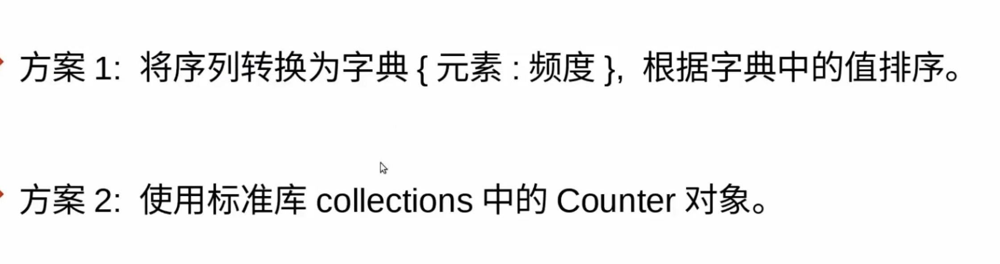
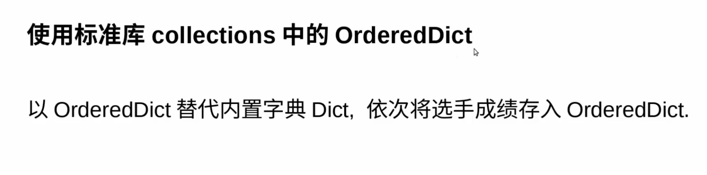

过滤方案
from random import randint
randint(-10, 10)
l = [randint(-10, 10) for _ in range(10)]
[x for x in l if x >= 0]
g = filter(lambda x: x >= 0,l)
g = filter(lambda x: x >= 0,l)
list(g)
d = {'student%d' % i : randint(50,100) for i in range(1, 21)}
{k:v for k, v in d.items() if v >= 90}
g = filter(lambda item: item[1] >= 90, d.items())
list(g)
s = {randint(0, 20) for _ in range(20)}
{x for x in s if x % 3 == 0}
元组访问
#%%
s = ('jim', 16, 'male', 'zm@gamil.com')
from enum import IntEnum
class StudentEnum(IntEnum):
NAME = 0
AGE = 1
SEX = 2
EMAIL = 3
StudentEnum.NAME
StudentEnum.AGE
#%%
from collections import namedtuple
Student = namedtuple('Student', ['name', 'age', 'sex', 'email'])
s2 = Student('jim', 16, 'male', 'zm@gamil.com')
s2
s2.name
s2.age
字典排序
#%%
(3, 2) > (1, 4)
from random import randint
d = {k:randint(60, 100) for k in 'abcdefgh'}
l = [(v, k) for k, v in d.items()]
sorted(l)
sorted(l, reverse=True)
list(zip([1, 2, 3], [4, 5, 6]))
list(zip(d.values(), d.keys()))
#%%
p = sorted(d.items(), key = lambda item: item[1], reverse=True)
enumerate(p)
list(enumerate(p, 1))
for i, (k, v) in enumerate(p, 1):
print(i, k, v)
for i, (k, v) in enumerate (p, 1):
d[k] = (i, v)
{k:(i, v) for i, (k, v) in enumerate(p, 1)}
统计数据

#%%
from random import randint
data = [randint(0, 20) for _ in range(30)]
d = dict.fromkeys(data, 0)
for x in data:
d[x] += 1
# 列表解析
sorted([(v, k) for k, v in d.items()], reverse=True)[:3]
# 生成器解析
sorted(((v, k) for k, v in d.items()), reverse=True)[:3]
import heapq
heapq.nlargest(3, ((v, k) for k, v in d.items()))
#%% Counter
from collections import Counter
c = Counter(data)
c.most_common(3)
from collections import Counter
import re
txt = open('bible.txt').read()
print(txt)
ret = re.split('\W+', txt)
print(ret)
c2 = Counter(ret)
print(c2.most_common(10))
字典key的交集

from random import randint, sample
sample('abcdefgh', 3)
d1 = {k: randint(1,4) for k in sample('abcdefgh', randint(3, 6))}
d2 = {k: randint(1,4) for k in sample('abcdefgh', randint(3, 6))}
d3 = {k: randint(1,4) for k in sample('abcdefgh', randint(3, 6))}
d1 = [d1, d2, d3]
[k for k in d1[0] if all(map(lambda d: k in d, d1[1:]))]
s1 = d2.keys()
s2 = d3.keys()
s1 & s2
from functools import reduce
reduce(lambda a, b : a & b, map(dict.keys, d1))
如果让字典保持有序

from collections import OrderedDict
d = OrderedDict()
d['c'] = 1
d['b'] = 2
d['a'] = 3
d.keys()
players = list('abcdefgh')
from random import shuffle
shuffle(players)
od = OrderedDict()
for i, p in enumerate(players, 1):
od[p] = i
print(od)
def query_by_name(d, name):
return d[name]
query_by_name(od, 'c')
from itertools import islice
list(islice(range(10), 3, 6))
def query_by_order(d, a, b = None):
a -= 1
if b is None:
b = a + 1
return list(islice(d, a, b))
query_by_order(od, 3, 6)
实现用户的历史记录功能

from collections import deque
q = deque([], 5)
q.append(1)
q.append(2)
q.append(3)
q.append(4)
q.append(5)
q.append(6)
# 将一个python对象存入文件
import pickle
pickle.dump(q, open('save.pkl', 'wb'))
q2 = pickle.load(open('save.pkl', 'rb'))
print(q2)